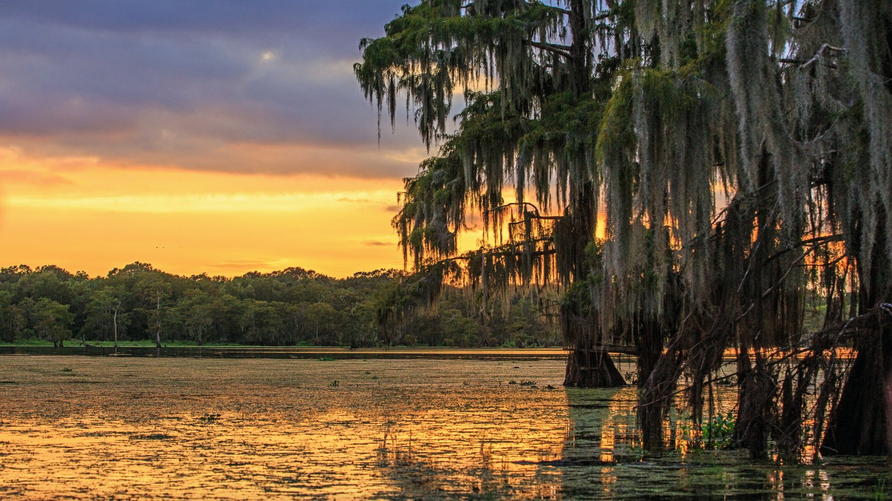
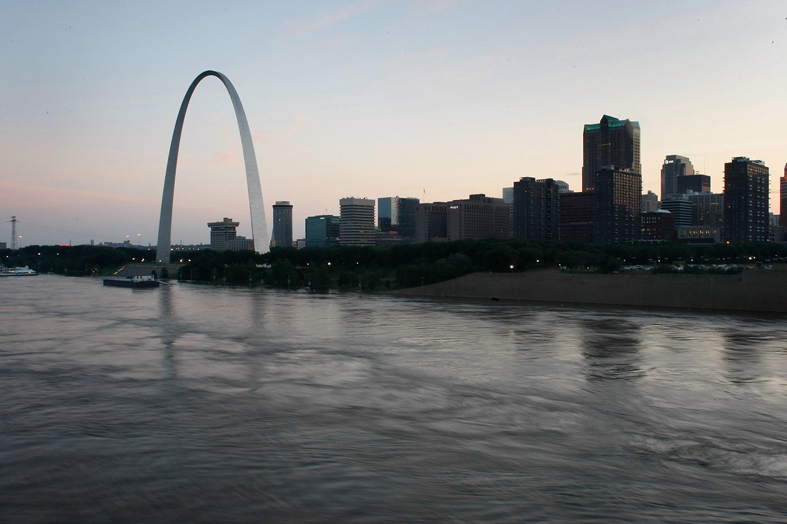

Raised in the Appalachian mountains, natural beauty was something that pervaded everyday life. Looking back, it's no surprise I would grow with a passion for art and aesthetic. I was enthusiatic about drawing and painting, an endless pursuit to replicate what I saw around me onto canvas. Crayons however, are a surprisingly limited media, and nature always had a way of putting my creations to shame. Then my father introduced me to Microsoft Paint, and one could say it's all been downhill from there.

My focus having been introduced to technology, while shifted, was still firmly rooted in art and design. I spent every elective I was allowed throughout my time in grade school and college into computer sciences and graphic design, and with my family uprooting and moving down into the bayous of Louisiana during my later years in school, I was given plenty of new inspiration to pull from.

Fresh out of college and ready to take on the world, my first job, in a case I can only describe as divine irony for an art student, was as a barista, but I had big dreams of seeing the corners of the world with my own eyes. In what was probably the most reckless decision of my life, I signed up as a deckhand aboard a motor vessel. By the time the gravity of what I had done actually hit me, I was already waking up in a hotel room in Houston, about to be shipped out on a new adventure. The juncture of nature and technology has forever been a cornerstone in my life, and I want to incorporate my unique vision of the world into my designs and provide a product that has truly never been seen before.